African Violet Cultivars
Leaves of the African violet varieties currently available from our collection. 179 varieties available. Last updated 27 November 2026.
This is a hobby, not a commercial greenhouse, so stock is limited and varies.
Leaves are sold in sets of two for R30 per set, and only one set per cultivar can be ordered. Minimum order: 5 sets (R150), so please choose at least 5 different cultivars, plus postage. Choose your sets below, then send the order to us. We reply with an invoice that lists what is available, the postage quote and our banking details. See Orders & Contact.
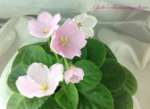
AJohns Shimmering Star
MiniatureHybridiser: Arne JohanssonSingle star, white with very pale pink thumbprint Round tailored light to dark green.
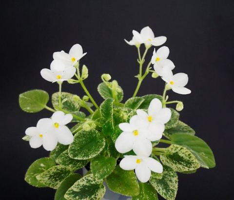
Alan's Fallen Angel
Miniature TrailerHybridiser: A.MurphySemidouble white flowers and pointed, variegated green-and-white foliage, growing in a trailing habit.
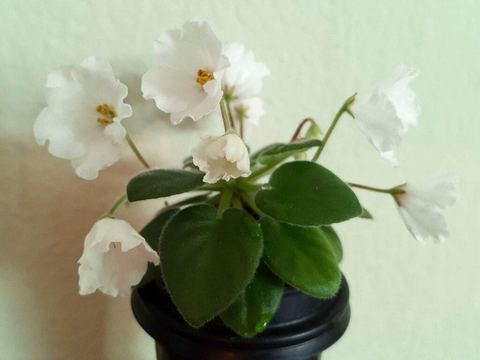
Alan's White Feather
SemiminiatureHybridiser: A. MurphyLarge pure white bells on firm stems. Deep green leaves. Abundant flowering.
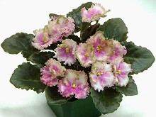
Allegro Watermelon Ruffles
SemiminiatureHybridiser: AVSA 10439 11/17/2011 (J. Stromborg)Single-semidouble ruffled light pink pansy/dark pink patches, green-edged top petals. Dark green, heart-shaped, glossy, ruffled, serrated/red back.
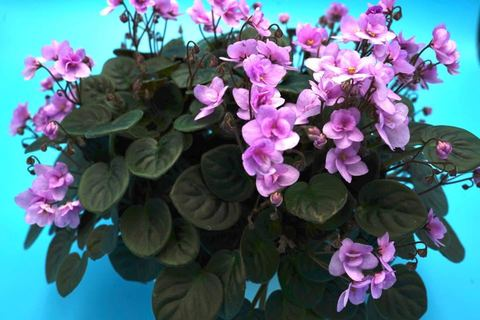
Aly's Rosy Baby
Semiminiature TrailerHybridiser: Droege, A.Semi double rose blossoms. Dark pointed foliage.
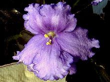
Apache Paradise
Small StandardHybridiser: J. Munk DAVS 1468, TX HybSemidouble dark lavender fringed pansy/darker edge. Variegated medium green, white and pink, plain.
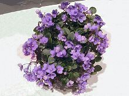
Baby Brian
Semiminiature TrailerHybridiser: AVSA 4582 P. TraceySingle pale blue star. Plain.
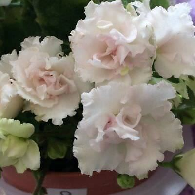
Ballet Taffy
MiniatureHybridiser: A. FischerDouble white star/pink tinge. Light green.
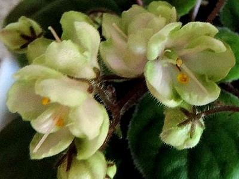
BE-Fiona
SemiminiatureHybridiser: AVSA 11310 E. BerkóSemidouble white pansy/pale pink eye, green edge. Medium green, plain, quilted.
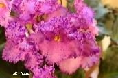
BE-Hella
SemiminiatureHybridiser: E. BerkóSemidouble ruffled pink with some blue fantasy speckles. Red backed green foliage.
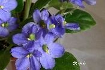
BE-Jade
SemiminiatureHybridiser: E. BerkóBlue pansy to semidouble with variable green edging. Plain green leaves
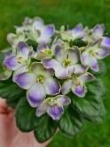
BE-Janka
SemiminiatureHybridiser: E. BerkóGreen and purple edged fading to white center. Neat green foliage
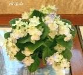
BE-Judit
SemiminiatureHybridiser: E. BerkóGreen edged white semidouble blossoms. Neat green foliage.
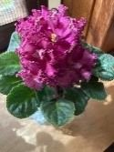
BE-Lulu
SemiminiatureHybridiser: E. BerkóPink ruffled double.
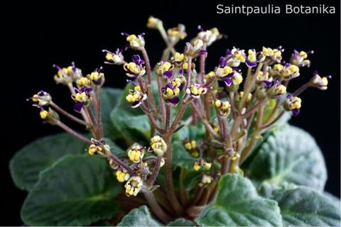
Botanika
SemiminiatureHybridiser: Unknown. Found in a greenhouse in the UK, brought to the public by Angelika Richter.Weird strange flower on standard plant unusual heavy bloomer with virtually no petals . Love it or hate it
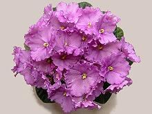
Bunyip
SemiminiatureHybridiser: ANZ 612, 2007 S. GardnerSingle-semidouble pink pansy/darker eye, darker frilled edge. A bunyip is a large, fierce mythological Australian creature but this plant was named not for that but for a town of that name near Melbourne.
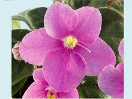
Castella
SemiminiatureHybridiser: ANZ 528, 2006 S. GardnerSemi double pink pansy/darker eye, purple fantasy. Dark green, plain, red backed leaf
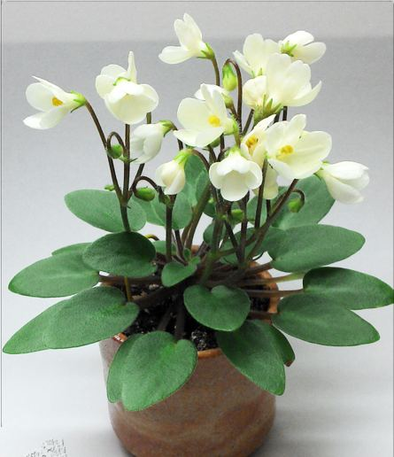
Chanta Spring
Miniature TrailerHybridiser: Sweden R. P. HairSingle light yellow bell shaped little flowers bloom in clusters above medium green pointed foliage. Requires cooler growing conditions.
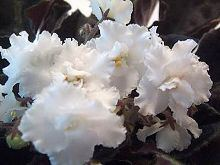
Christening Gown
SemiminiatureHybridiser: S. SoranoSemidouble white frilled pansy. Dark green.
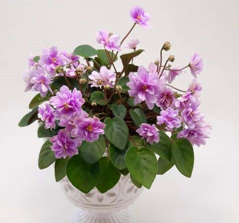
Cirelda
Semiminiature TrailerHybridiser: P. Tracey AVSA 3620Double pink two-tone. Quilted.
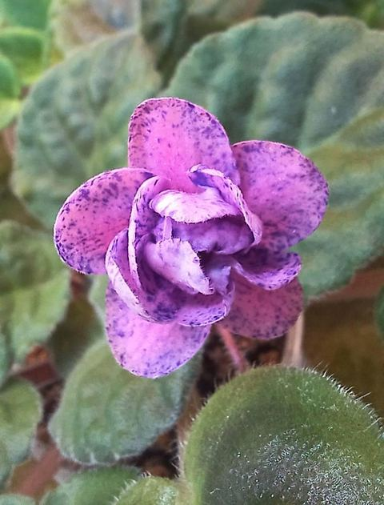
Covan's Old Fashioned Love
SemiminiatureHybridiser: Corrie van HeerdenPink with purple flecked fantasy, double. over plain green foliage.
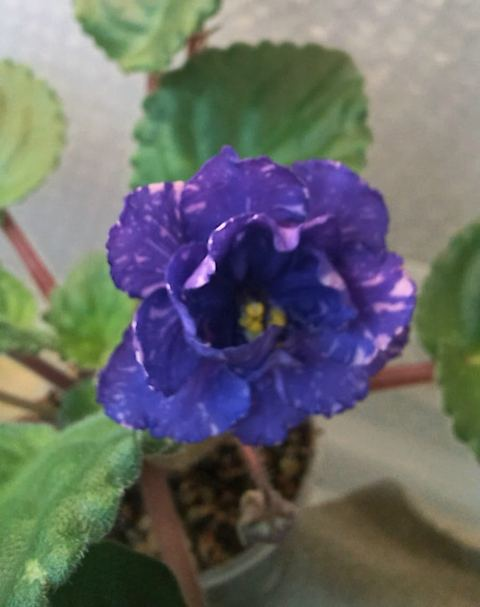
Covan's Purple Rose
SemiminiatureHybridiser: Corrie van HeerdenDark purple with pink flecked fantasy, double. Over plain green foliage.
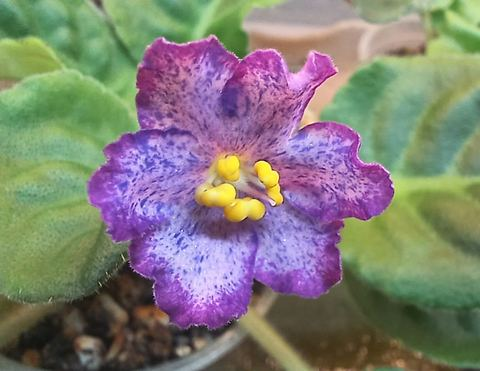
Covan's Spotted Girl
SemiminiatureHybridiser: Corrie van HeerdenMauve-pink with raspberry edging and purple flecked fantasy, semi-double. Plain green foliage.
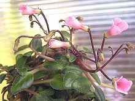
Dainty Dynamo
Miniature TrailerHybridiser: AVSA8088 J. StokesSingle pink bell. Medium green, plain, pointed.
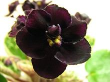
Dark Night of the Soul
SemiminiatureHybridiser: AVSA 10301 G. McDonaldSemidouble black ruffled pansy/dark coral-red reverse. Variegated medium green and white, ovate, serrated .
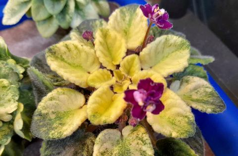
Dimboola
SemiminiatureHybridiser: ANZ 680, 2014 S. GardnerSemidouble dark pink-cerise/darker frilled edge. Variegated dark green, pink and tan, ovate/red back
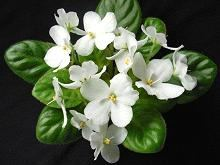
Donna Buang
SemiminiatureHybridiser: ANZ 674, 2014 S. GardnerSingle white pansy/pink markings. Medium green, ovate.
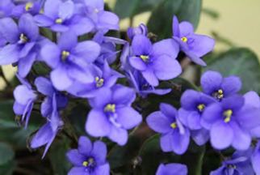
Driftwood Trail
Semiminiature TrailerHybridiser: AVSA 6472 02/03/1987 (C. Sotkiewicz)Double royal blue star. Dark green, plain, pointed, glossy.
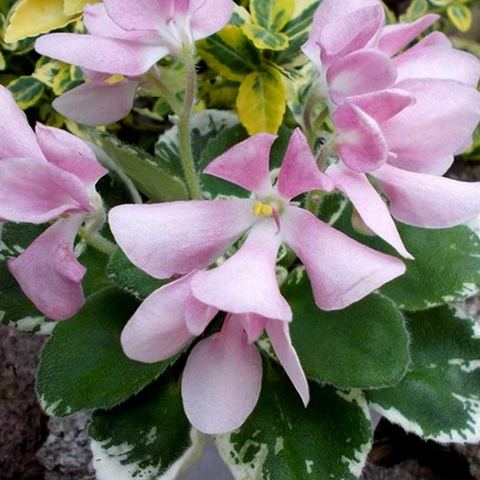
DS-Rumianets (DS-Blush) DS-Румянец
SemiminiatureHybridiser: DimetrisSimple wasp-shaped flowers with round petals of warm pink color and a white eye. Leaves variegated, green and white.
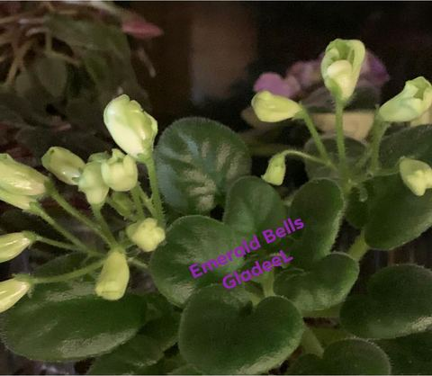
Emereld Bell
MiniatureHybridiser: O. BaryshevaSimple bell-shaped emerald green flowers. Light green foliage. A variety that captivates with its ability to bloom profusely without interruption for months!
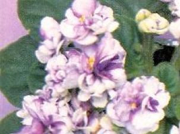
Fairy Tales
MiniatureHybridiser: AVSA 4436 P. TraceyDouble white and blue. Plain, pointed. Vintage - 1981
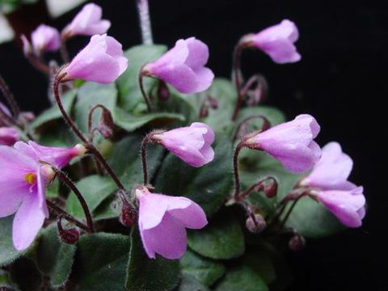
Flashy Trail
Miniature TrailerHybridiser: H. PittmanSingle lavender small bell/purple fantasy. Dark green.
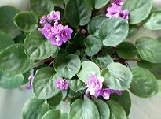
Foster Trail
Semiminiature TrailerHybridiser: AVSA 8760 H. PittmanSemidouble fuchsia. Medium green, plain. Semiminiature trailer
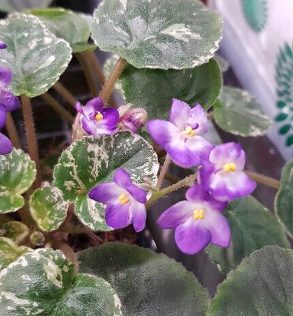
Frankie's Purr-ty Kitty
Semiminiature TrailerHybridiser: Patrick TangPurple thumb-print over variegated trailing leaves.
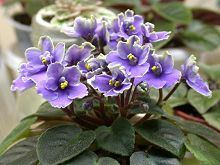
Frosted Denim
MiniatureHybridiser: AVSA 8513 11/09/1996 (S. Sorano)Semidouble light blue pansy/white edge. Medium green, plain, quilted.
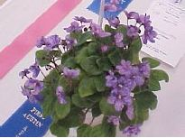
Fun Trail
Semiminiature TrailerHybridiser: DAVS 1275 H. PittmanSemidouble pink/purple fantasy. Semiminiature trailer
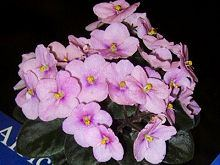
Gembrook
Small StandardHybridiser: ANZ 537, 2006 S. GardnerSingle-semi double light pink pansy/darker eye. Medium green, quilted
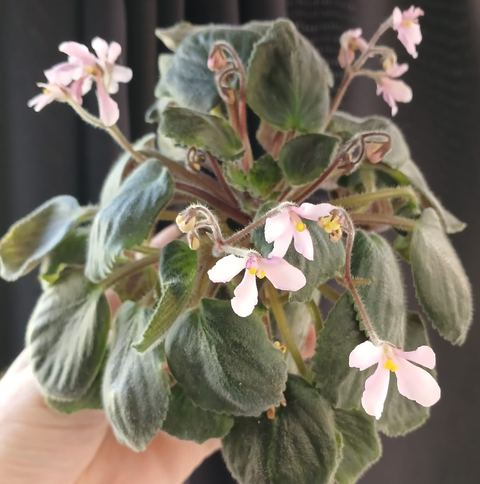
GG-Flying Pink Tail
SemiminiatureHybridiser: E. Berkó / G. GoodeSingle pink wasp. Dark green, red backed with radiating veins, with some bustleback leaves.
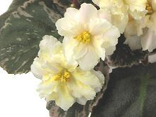
Golden Eye
SemiminiatureHybridiser: S. SoranoDouble white star/yellow markings. Variegated dark green, pink and white.
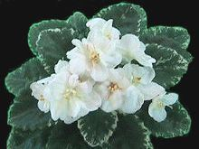
Golden Touch
SemiminiatureHybridiser: AVSA 8399 H. PittmanSemidouble white/yellow. Variegated medium green and white, plain.
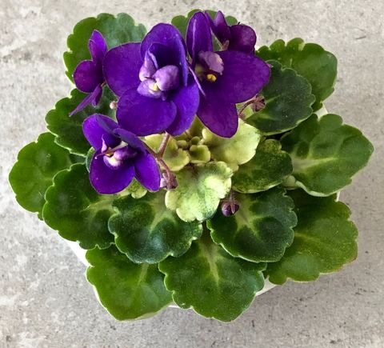
Heinz's Dream On
SemiminiatureHybridiser: H. DornbuschSemidouble purple pansy. Medium green and cream crown variegation, scalloped girl foliage. Semimini.
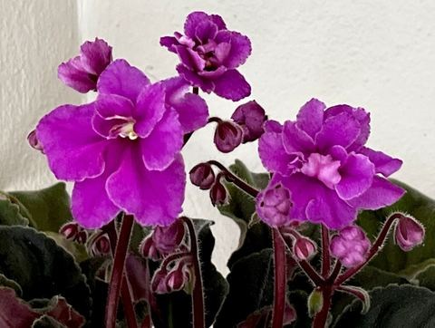
Heinz's Explorer
SemiminiatureHybridiser: H. DornbuschClackamas leaves, variegated
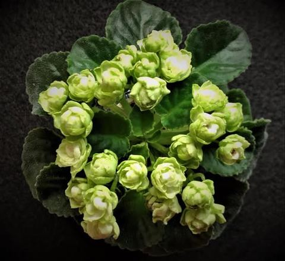
Hunter's Cabbage Goddess
SemiminiatureHybridiser: K. MuzalewskiDouble green star. Medium green foliage.
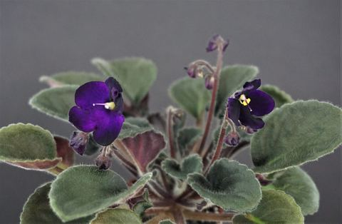
Hunter's Enigma
SemiminiatureHybridiser: K. MuzalewskiDark purple, almost black, semidouble, sticktite wasp. Green bustle foliage.
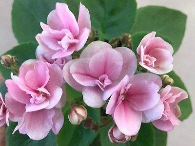
Hunter's Pink Camo
SemiminiatureHybridiser: AVSA 11233 K. MuzalewskiDouble white pansy/pink eye, rays. Medium green, pointed.
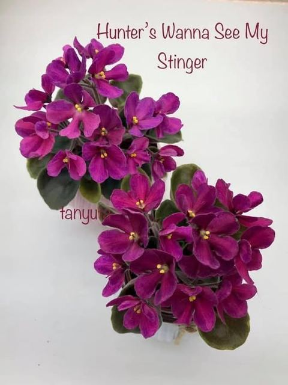
Hunter's Wanna See My Stinger
SemiminiatureHybridiser: K. MuzalewskiSingle-semidouble fuschia wasp, wide raspberry edge sticktite. Dark green.
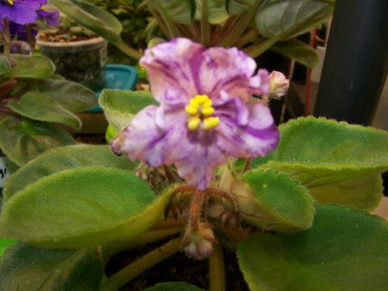
Imp's Karmic Kaliedoscope
MiniatureHybridiser: J. JacksonSemi-double pink bell, darker pink fantasy, white puff fantasy with white edge. Medium green, pointed, quilted.
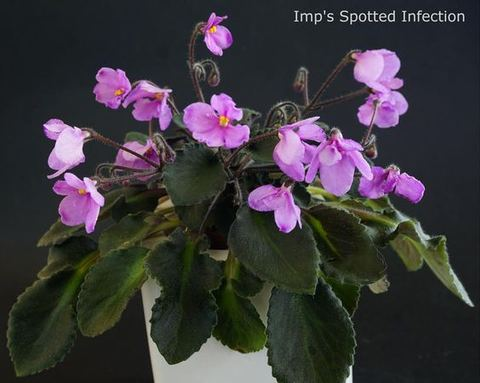
Imp's Spotted Infection
SemiminiatureHybridiser: J.JacksonSingle pink wasp, raspberry and variable blue fantasy. Dark green, quilted, pebbled, wavy, rolled/red back.
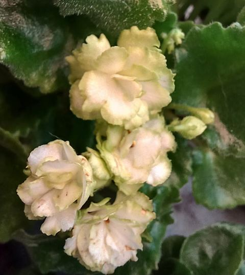
Irish Lace
SemiminiatureDouble light green and cream frilled blossom. Wavy green leaves
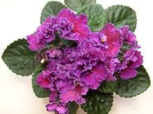
Jindivick
SemiminiatureHybridiser: ANZ 613, 2007 S. GardnerSemi double light wine-red frilled pansy/purple band, white edge. Dark green, serrated.
Jolly Champ
SemiminiatureHybridiser: AVSA 9711 H. PittmanSemidouble-double red pansy. Medium green, quilted, wavy.
Jolly Gem
MiniatureHybridiser: H. PittmanSemidouble pink. Medium green, plain.
Jolly Jubilee
MiniatureHybridiser: AVSA 9908 H. PittmanSingle-semi-double purple pansy. Crown variegated medium green and gold, plain.
Jolly Maiden
SemiminiatureHybridiser: AVSA 10011 H. PittmanSingle-semidouble white star/pink markings. Medium green, plain, pointed.
Jolly Orchid
MiniatureHybridiser: AVSA 9719 (H. Pittman)Double orchid and white blooms. Quilted, medium green miniature foliage. Extremely profuse bloomer.
Jolly Sun Chaser
SemiminiatureHybridiser: AVSA 11134 H. PittmanDouble white and yellow. Dark green, plain, serrated.
Kallista
SemiminiatureHybridiser: ANZ 563, 2006 S. GardnerSingle-semidouble mauve pansy/darker eye, upper petals. Dark green/red back.
Kinglake (Sport)
SemiminiatureHybridiser: S. GardnerSingle-semi double white with purple center, thin green edge. Dark green, serrated/red back.
LE-Fajewerk (LE- Fireworks) ЛЕ-Фейерверк
MiniatureHybridiser: E. Lebetskaya 2017Bright pink with a raspberry shade and blue fantasy touches and a corrugated edge. Variegated fancy.
LE-Goluboi Potok (LE-Blue Stream) ЛЕ-Голубой Поток
Semiminiature TrailerHybridiser: E. LebetskayaLarge double light purple with greenish edge and underside, somewhat cupped. Medium green foliage.
LE-Lel' (Sport)
SemiminiatureHybridiser: E. LebetskaiaSemidouble white with green (original was light blue two-tone) bell. Dark green, plain, pointed.
LE-Nika ЛЕ-Ника
SemiminiatureHybridiser: E. LebetskaiaDark orchid-fuchsia semi-double and double flowers with petals tucked inward. Lush blooms over a neat, even dark rosette.
LE-Rein (LE-Rhine) ЛЕ-Рейн
Miniature TrailerHybridiser: E. Lebetskaya 2018Light purple bells, lighter exterior. Very small, medium green, pointed foliage.
LE-Viktoriya (LE-Victoria) ЛЕ-Виктория
SemiminiatureHybridiser: E. LebetskaiaSemi-double ruffled bright pink flowers on curved girl foliage, very compact.
LE-Zoryane Syaivo (LE-Starlight) ЛЕ-Зоряне Сяйво
SemiminiatureHybridiser: E. LebetskaiaCrown variegated leaves with white double frilled blooms featuring a distinct deep blue/purple edge.
Lemon Drop
SemiminiatureHybridiser: AVSA 8245 S. SoranoDouble yellow and white pansy. Medium green, plain, heart-shaped, pointed, serrated.
Lilla Blåklockan
Miniature TrailerHybridiser: I. LindskogVery tiny light blue bells with darker blue eye. Light green, pointed.
Lilydale
SemiminiatureHybridiser: S. Gardner AVSA ANZ 607, 2006Single-semidouble light wine-red pansy. Medium green/red back.
Lithuanica
Semiminiature TrailerHybridiser: F. BūtienėDouble light pink with darker pink tips. Medium green, semitrailing, pointed foliage.
Little Bo Peep
MiniatureHybridiser: StorytellaSingle light pink. Girl foliage.
Little Chatterbox
SemiminiatureHybridiser: S. SoranoSingle-semidouble dark pink star/dark blue fantasy. Dark green, and plain.
Little Jericho
MiniatureCoral pink double to semidouble.
Little Pro
SemiminiatureHybridiser: AVSA 6637 06/11/1987 (H. Pittman)Semidouble pink. Dark green, quilted, pointed/red back.
Little Rick
SemiminiatureHybridiser: AnthofloresLarge, white stars with a large, pink spot in the center of each petal. Medium green leaf.
Lucky Ladybug
SemiminiatureHybridiser: AVSA 9534 Lyndon Lyon Greenhouses / P. SoranoSingle-semidouble maroon-red pansy. Dark green, plain, quilted.
Lunar Lilly White
SemiminiaturePure white single to semi-double wasp-type flowers with elongated petals. Dark green bustle back leaves
Mac's Black Uhuru
SemiminiatureHybridiser: G. McDonaldDouble, near black burgundy pansy. Quilted, medium green foliage.
Mac's Carnival Clown
SemiminiatureHybridiser: AVSA 9470 G. McDonaldSingle-semidouble coral pink pansy/purple fantasy, white edge. Medium green, plain, quilted, heart-shaped, serrated.
Mac's Circus Clown
SemiminiatureHybridiser: G. McDonaldSingle-semidouble pink pansy/purple fantasy. Medium green, plain, quilted, heart-shaped, serrated.
Mac's Coral Carillon
MiniatureHybridiser: AVSA 10499 G. McDonaldSingle coral two-tone pansy. Mosaic variegated medium green and yellow, plain.
Mac's Elegant Emerald
SemiminiatureHybridiser: G. McDonaldSingle white with green edge. Medium green leavs.
Mac's Freckle Face Redhead
SemiminiatureHybridiser: AVSA 10501 G. McDonaldSingle-semidouble coral-red two-tone pansy. Mosaic variegated dark green and white.
Mac's Just Jeff
MiniatureHybridiser: G. McDonald AVSA 9478Semidouble coral red pansy/variable darker fantasy. Mosaic variegated medium green, white and variable pink, plain, scalloped.
Mac's Momentary Meltdown
MiniatureHybridiser: G. McDonald AVSA 9879Single white and variable blue sticktite pansy/variable green tips. Medium green, plain, ovate, pointed, hairy.
Mac's Momentary Meltdown Sport
MiniatureSingle white sticktite pansy with green tips. Medium green, plain, ovate, pointed, hairy.
Mac's Pizzicato Paradise
MiniatureHybridiser: G. McDonald AVSA 10507Single red sticktite pansy/blue fantasy. Variegated medium green and white, heavily scalloped, girl foliage.
Mac's Smouldering Sapphire
SemiminiatureHybridiser: G.McDonaldSemidouble stars of sapphire blue w/coral puff fantasy. Variegation of ivory & light green.
Mac's Taimat
SemiminiatureHybridiser: G.McDonaldSingle medium pink pansy blossoms over variegated cream and white Clackamas foliage with a pink-tone stems.
Mac's Toreador Trophy
SemiminiatureHybridiser: G. McDonaldSimple or semi-double, very intense red-purple flowers with wavy petals. Leaves dark green, quilted.
Mac's Wagon Wheels
SemiminiatureHybridiser: AVSA 9884 G. McDonaldSingle pink pansy/purple fantasy. Variegated medium green and yellow, longifolia, serrated.
Mac's Walk About Uluru
MiniatureHybridiser: AVSA 10515 G. McDonaldSingle-semidouble pink pansy. Crown variegated medium green, white and pink clackamas.
Malyshka Rusalka (Baby Mermaid) Малышка Русалка
SemiminiatureHybridiser: K. MorevaBeetroot-colored blossom with a changing red center and dark tips. Cream lace border.
Maroondah
MiniatureHybridiser: ANZ 615, 2007 S. GardnerSemidouble dark blue frilled pansy. Dark green, plain/red back.
Midnight Waltz
Semiminiature TrailerHybridiser: S. SoranoDouble dark purple pansy. Dark green, ovate. Semiminiature trailer
Milky Way Trail
Semiminiature TrailerHybridiser: AVSA 7169 08/01/1989 J . StahlSingle-semidouble white pansy. Medium green, heart-shaped, quilted.
Montrose
MiniatureHybridiser: ANZ 571, 2006 S. GardnerDouble salmon pink two-tone pansy. Dark green/red back.
Moon Gold
SemiminiatureHybridiser: H. PittmanDouble gold ruffled. Variegated, wavy.
MP-Fairy Margaret
SemiminiatureHybridiser: Małgorzata PrzybytLight red/purple with darker ruffled edging. Dropper?
MP-First Lady
SemiminiatureHybridiser: Małgorzata PrzybytDeep pink purple semidouble pansy over crown variegated foliage.
Mr Cheeky
Miniature TrailerHybridiser: G. Ford ANZ 225, 1985Single medium-dark blue sticktite. Dark green.
Mustang
SemiminiatureHybridiser: V. TarasiukSport of Balchug-Mechta (I. Milechin). It’s not just dark purple - the color seems to thicken to the edge almost to black (which is not trivial in itself), further along the edge are white dots, and the petals themselves are of a heterogeneous color, with something like a venous pattern.
Mzingeli Bright Light
MiniatureHybridiser: Seed from Ken M.White double blossom over plain green foliage.
Mzingeli Party Puffs
SemiminiatureHybridiser: Seed from Ken M.Dark pink with white puff fantasy, semi-double.
Mzingeli Phantom Rose
MiniatureHybridiser: Seed from Ken M.Shades of pink to white double blossom. Medium green leaves that grow in a good rosette pattern.
Mzingeli Sky Puffs
SemiminiatureHybridiser: Seed from Ken M.Semidouble to double blue with white puff fantasy. Pure green leaves.
Mzingeli Sugar Snap
SemiminiatureHybridiser: Seed from Ken M.Blush of purple over white.
Mzingeli Sweet Pea
SemiminiatureHybridiser: Seed from Ken M.Blush of dark marroon over white.
N-Lesnoi Rodnik (N-Forest Spring) Н-Леснои Родник
MiniatureHybridiser: N. BerdnikovaSimple blue bells with white edging, variegated dark green, pointed foliage.
N-Lunaria Н-Лунария
SemiminiatureHybridiser: N. BerdnikovaWhite stars with deeply cut petals and a blue eye, abundant flowering. Round, light green foliage with yellow crown variegation.
N-Robinson
MiniatureHybridiser: N. BerdnikovaStick tite white bells with medium blue eye and tinting. Medium green and white to gold variegated foliage.
ND-Mishinnaya Koroleva (ND-Mouse Queen) НД-Мышинная Королева
SemiminiatureHybridiser: N.Danilova-SuvorovaLight pink single pansy over yellow crown variegation.
Ness' Angel Glitter
SemiminiatureHybridiser: AVSA 8132 D. NessSemidouble fuchsia ruffled pansy/darker sparkle fantasy, edge. Dark green, pointed, serrated/red back.
Ness' Blueberry Puff
Small StandardHybridiser: D. NessSemidouble dark blue pansy/pink fantasy. Dark green, glossy, scalloped/red back.
Ness' Crinkle Blue
SemiminiatureHybridiser: AVSA 8136 D. NessDouble dark blue star/variable thin white edge. Dark green, quilted, serrated/red back.
Ness' Feather Pink
SemiminiatureHybridiser: D. NessSemidouble-double light pink frilled. Dark green, scalloped/red back. Semiminiature
Ness' Satin Rose
SemiminiatureHybridiser: AVSA 8144 D. NessDouble rose-mauve two-tone star. Dark green, quilted, scalloped/red back.
Ness' Sheer Peach
SemiminiatureHybridiser: AVSA 8145 D. NessSemidouble-double peach-pink pansy. Medium green, plain.
Optimara Little Cheyenne
SemiminiatureHybridiser: AVSA 7916 HoltkampSemidouble blue and white/blue center. Light green, ovate, glossy, hairy, serrated.
Optimara Little Pearl
MiniatureHybridiser: Holtkamp AVSA 6956Single-semidouble blush-white. Medium green, heart-shaped to ovate, pointed, hairy, glossy.
Optimara NeverFloris
Small StandardHybridiser: R.HoltkampBright green flowers that do not fully Open. Ordinary color on a standard green leaf.
Optimara Rose Quartz
MiniatureHybridiser: AVAS 6969 HoltkampSingle-semidouble pink. Medium green, ovate, pointed, glossy, hairy.
OS-Dzhungarik (OS-Djungarian Hamster) ОS-Джунгарик
SemiminiatureHybridiser: S. OsipovaSingle white sticktite star. Light green, variegated, Clackamas type foliage with deep ridges
Patou's Pink Lavender
SemiminiatureHybridiser: P. Fuangaksorn AVSA 11328Single light lavender frilled pansy/pink eye, purple fantasy. Medium green, serrated. Medium green, serrated.
Persian Prince
MiniatureHybridiser: AVSA 8266 S. SoranoSemidouble medium blue pansy. Medium green, ovate, scalloped girl foliage
Petite Blarney
MiniatureHybridiser: AVSA 10561 H. PittmanDouble light pink/variable green-white edge. Medium green, girl foliage.
Pixie Blue
Miniature TrailerHybridiser: AVSA 2598 L. LyonSingle purple-blue/darker center. Plain, ovate. Dropper
PK-55
SemiminiatureHybridiser: Piotr Kleszczyński from PolandBlue purple semi-star (almost bell) with puff fantasy.
Prancing Pony
SemiminiatureHybridiser: AVSA 7591 S. SoranoDouble dark pink pansy/dark blue fantasy. Medium green, plain, quilted.
Rob's Antique Rose
SemiminiatureHybridiser: AVSA 8451 R. RobinsonSemidouble silver-rose sticktite frilled pansy/darker shading, some silver-green tips. Dark green, pointed, glossy, serrated/red back.
Rob's Blue Socks
SemiminiatureHybridiser: AVSA 8874 R. RobinsonSemidouble medium blue star. Crown variegated dark green, pink, tan, and beige/red back. Semiminiature.
Rob's Boolaroo
Semiminiature TrailerHybridiser: R. Robinson AVSA 8053Semidouble light pink sticktite pansy/bright blue fantasy. Medium green, quilted.
Rob's Chilly Willy
MiniatureHybridiser: R. Robinson AVSA 9461Double silver-white star/medium blue overlay, edge. Crown variegated medium green and white, pointed.
Rob's Combustible Pigeon
SemiminiatureHybridiser: R. Robinson Rebel's Splatter Kake x Rob's Cool FruitSemidouble pink pansy/blue fantasy, white edge. Crown variegated medium green, yellow and white, plain, serrated.
Rob's Cool Fruit
SemiminiatureHybridiser: AVSA 8608 R. RobinsonDouble white pansy/rose-pink edge. Crown variegated medium green, white and yellow, pointed, serrated.
Rob's Dandy Lion
SemiminiatureHybridiser: AVSA 7731 R. RobinsonSemidouble silver-white shaded large bell. Variegated black-green and white, quilted.
Rob's Dust Storm
SemiminiatureHybridiser: R. Robinson (7732) 07/06/1992Double bright pink pansy/blue fantasy. Dark green, pointed, quilted, serrated.
Rob's Flim Flam
SemiminiatureHybridiser: AVSA 7885 R RobinsonSemi-double dark red sticktite pansy/ wide white frilled edge. Dark green, quilted, wavy, serrated/ red backed.
Rob's Galiwinku
Semiminiature TrailerHybridiser: AVSA 8059 R. RobinsonDouble red-orchid sticktite/dark blue fantasy.
Rob's Ice Maiden
SemiminiatureHybridiser: AVSA 7736 R. RobinsonSemi-double, light silverish-lavender with purple markings, and short, prominent, bright yellow stamens.
Rob's Pewter Bells
SemiminiatureHybridiser: AVSA 7740 R. RobinsonSemi-double silver-light blue large bell. Variegated dark green and white, pointed, quilted..
Rob's Puddy Cat
SemiminiatureHybridiser: AVSA 7563 R. RobinsonDouble creamy white to light pink frilled. Dark green, quilted, serrated.
Rob's Sarsparilla
SemiminiatureHybridiser: AVSA 8462 R. RobinsonSemidouble copper-pink sticktite pansy/red-brown frilled edge, some green. Dark green, glossy, wavy, serrated.
Rob's Scrumptious
SemiminiatureHybridiser: AVSA 9466 R. RobinsonSemidouble white star/dark pink patches. Crown variegated medium green and white, quilted.
Rob's Silver Spook
SemiminiatureHybridiser: AVSA 7174 R. RobinsonSemidouble white and light lavender. Crown variegated medium green, pointed.
Rob's Slap Happy
SemiminiatureHybridiser: AVSA 9040 R. RobinsonSemidouble dark coral pansy. Crown variegated dark green, white, cream and pink, quilted.
Rob's Smarty Pants
MiniatureHybridiser: R. Robinson AVSA 8614Semidouble white ruffled star/blue-speckled pink edge. Medium green, glossy, wavy, serrated.
Rob's Vanilla Trail
Semiminiature TrailerHybridiser: AVSA 9296 R. RobinsonDouble cream to blush white pansy. Dark green, quilted, serrated, pointed.
Rob's Wagga Wagga
Semiminiature TrailerHybridiser: AVSA 8071 R. RobinsonDouble dark blue sticktite/variable white marking. Medium-dark green, plain, pointed, serrated.
Rob's Whiz Bang
MiniatureHybridiser: AVSA 7441 R. RobinsonDouble dark red-purple/white edge. Variegated medium green and white, pointed, quilted, serrated.
Rob's Zinfandel
SemiminiatureHybridiser: R. RobinsonSemidouble dark burgundy-red frilled. Variegated black-green and white, pointed, quilted, ruffled, serrated/red back.
RS-Zimniy Tsvetok (RS-Winter Flower) РС-Зимний Цветок
Semiminiature TrailerHybridiser: Svetlana RepkinaRS-Winter Flower: White-green semi-double flowers with rare pink and blue fantasy. Very abundant and long flowering.
Scales
SemiminiatureHybridiser: Elena LebetskayaDelicate sky blue semi-double and double flowers. Pink-platinum crown variegation.
Senk's Alchemy Morning Star
Semiminiature TrailerHybridiser: AVSA 9842 R. Follett/D. SenkSingle yellow six-petal bell. Medium green, heart-shaped, quilted, serrated.
Senk's Azalea Trail
Miniature TrailerHybridiser: AVSA 9845 01/30/2008 (R. Follett/D. Senk)Single-semidouble fuchsia wasp. Variegated dark green, white and pink, pointed, ovate/red back longifolia.
Senk's Fruit Fly
Miniature TrailerHybridiser: AVSA 9856 R. Follett/D. SenkSingle dark plum-purple bell. Dark green, pointed, glossy.
Senk's Longlegs
Semiminiature TrailerHybridiser: AVSA 9861 R. Follett/D. SenkSemidouble-double mauve star. Variegated dark green, white and pink, ovate, pointed, longifolia.
Senk's Merlot
Semiminiature TrailerHybridiser: AVSA 9863 R. Follett/D. SenkSingle red-purple wasp. Variegated dark green, white and pink, pointed/bustle back.
Senk's Royalty
Semiminiature TrailerHybridiser: AVSA 9865 R. Follett/D. SenkSingle dark purple recurved wasp. Variegated dark green, white and pink, pointed/red bustle back.
Senk's Say What?
Semiminiature TrailerHybridiser: AVSA 9866 R. Follett/D. SenkSingle purple wasp. Variegated medium green, scalloped girl foliage.
Sherbrooke
MiniatureHybridiser: ANZ 582, 2006 S. GardnerSemi double-double bright pink pansy. Dark green/red back
SK-Peĭzazh v Tumane (SK-Misty Landscape) СК-Пейзаж в Тумане
SemiminiatureHybridiser: (S. Kuznetsov)SK-Peizash v Tumane Lots of white to silver-blue bells. Medium green foliage
Snow Leapard
SemiminiatureHybridiser: S. SoranoSemidouble white ruffled pansy. Dark green.
Sugar Bear Blues
SemiminiatureHybridiser: AVSA 7183 D. NessSemidouble-double medium blue. Medium green, plain, pointed/red back.
Sunshine Lady
SemiminiatureHybridiser: AVSA 9276 H. PittmanDouble pink. Variegated medium green and cream, plain.
Suzie Sunshine
SemiminiatureSingle-semidouble white wavy star dark yellow markings, jot pink edge Medium green plain
Sweet Sam
Semiminiature TrailerHybridiser: AVSA 8845 P. HarrisDouble pink/variable pink and or white mottled edging on top petals. Medium green, pointed, heart-shaped, serrated.
T'Ser-Doina
Small StandardHybridiser: Sergiu TirdeaMaroon moss wasps. Variegated, bright compact rosette, sometimes with stipules.
T'Ser-Pasiune
SemiminiatureHybridiser: Sergiu TirdeaSemi-miniature wasp, with venous pattern on flowers, with Tommy Lowe variegation.
Teen Sweetheart
SemiminiatureHybridiser: AVSA 7867 H. PittmanSemidouble medium blue/white edge. Variegated medium green and white, plain.
Texas Space Dust
MiniatureHybridiser: AVSA 8771 H. PittmanSemidouble light pink pansy. Variegated green and white, plain.
Tipped Honey
SemiminiatureHybridiser: AVSA 7386 H. PittmanDouble ruby red/dogwood tips. Dark green, plain/red back.
Toolangi
MiniatureHybridiser: ANZ 608, 2006 S. GardnerSemidouble-double red-purple pansy. Dark green/red back.
Twist 'n' Shout
SemiminiatureHybridiser: AVSA 8285 S. SoranoSemidouble light pink pansy/red frilled edge. Medium green, ovate, quilted.
Wesley's Bubblegum Cloud
MiniatureHybridiser: Wes CarterBubblegum pink wasp Bustled and spooned dark green foliage.
Wesley's Fairy Lights
MiniatureHybridiser: Wes CarterWhite bell shaped blossoms edged in green over plain green miniature foliage.
Wesley's King of Cups
SemiminiatureHybridiser: Wes CarterElongated bell shaped white wasp flowers. Foliage is variegated, spooned longifolia.
Wesley's Vampyr Concertina
MiniatureHybridiser: AVSA 11301 W. CarterSingle pink and fuchsia sticktite wasp. Dark green, plain/bustle back.
White Robi
Semiminiature TrailerHybridiser: AnthofloresSemi-double white flowers with a delicate pink spray. VA-Banks is a leaf Chimera from this variety.
Yellingbo
SemiminiatureHybridiser: ANZ 661, 2009 S. GardnerSemidouble purple frilled pansy/green-white edge. Dark green, serrated/red back
Your order
To order by WhatsApp (username @ggoode.sa) or Facebook Messenger, copy the order text and paste it into your message. Prices exclude postage.